GitHub - noxke/TencentGameClientOpenCourse: 腾讯游戏客户端公开课2023 腾讯菁英班
1.Java层分析 使用jadx打开题目apk，查看AndroidManifest.xml获取程序入口Activity为com.example.crackme1.MainActivity
查看反编译的MainActivity类的onCreate方法，分析Java层逻辑
1 2 3 4 5 6 7 8 9 10 11 12 13 14 15 16 17 public void onCreate (Bundle savedInstanceState) {super .onCreate(savedInstanceState);ActivityMainBinding inflate = ActivityMainBinding.inflate(getLayoutInflater());this .binding = inflate;Button button = (Button) findViewById(C0462R.C0465id.button);this .btn1 = button;new View .OnClickListener() { @Override public void onClick (View v) {EditText textInput = (EditText) MainActivity.this .findViewById(C0462R.C0465id.TextInput);String Inputstr = textInput.getText().toString();String RetStr = MainActivity.this .stringFromJNI(Inputstr);this , RetStr, 0 ).show();
按钮触发点击事件后，调用onClick方法，获取输入框的输入字符串Inputstr，将输入字符串Inputstr调用stringFromJNI方法，并将返回字符串RetStr显示为toast消息
查看处理字符串的stringFromJNI方法
1 2 3 4 5 public native String stringFromJNI (String str) ;static {"crackme1" );
该方法为native文件libcrackme1.so中的导出函数
使用Android Studio打开apk文件进行调试，对onClick方法中的stringFromJNI调用行下断点，开始调试运行
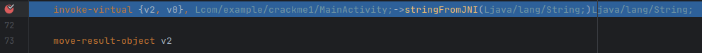
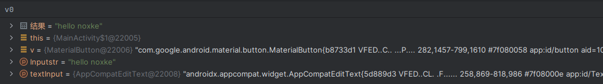
调用stringFromJNI前，参数寄存器v0为输入的字符串，单步跳过该行调用，查看返回值
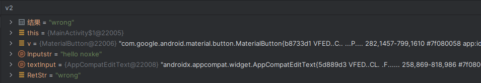
返回值v2寄存器为字符串Wrong，继续运行程序，字符串wrong以toast消息显示在屏幕上
查看logcat发现，调用stringFromJNI函数时程序会打印log信息Str:...，并且每次点击按钮调用函数时打印的字符串均不相同
2.Native层分析 分析和调试Java层发现，程序的字符串校验功能位于native层的stringFromJNI函数中，该函数为libcrackme1.so动态库的导出函数，该库文件位于crackme1/lib/armeabi-v7a/目录下，因此程序需要使用支持armabi-v7a的设备运行
使用readelf工具查看libcrackme1.so的导出函数
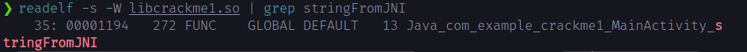
stringFromJNI函数偏移地址为0x1194，函数偏移最低位为0，Arm模式执行
使用ida32打开libcrackme1.so文件查看stringFromJNI函数
1 2 3 4 5 6 7 8 9 10 11 12 13 14 int __fastcall Java_com_example_crackme1_MainActivity_stringFromJNI (int a1, int a2, int a3) char *s2; char s[100 ]; char *)sub_12A4(a1, a3, 0 );memset (s, 0 , sizeof (s));"123" , 3 );5 , s);if ( !strncmp (s, s2, 5u ) || (sub_1134() & 1 ) != 0 )return sub_12EC(a1, "right" );else return sub_12EC(a1, "wrong" );
根据反编译c代码，函数将输入字符串s2与sub_F50函数生成的字符串s进行比较，当比较结果相同时，返回字符串right，不同时返回结果wrong
查看sub_F50函数
1 2 3 4 5 6 7 8 9 10 11 12 13 14 15 16 17 18 19 20 int __fastcall sub_F50 (int a1, const char *a2) unsigned int v2; int v3; int v5; int i; size_t v9; 0 );for ( i = 0 ; i < a1; ++i )0x40 u);0 ;return _android_log_print(4 , "Crack" , "Str:%s" , a2);
该函数生成一个随机字符串，并在log中打印该字符串，因此在log中看到的Str:...就是进行比较的字符串
在if判断中，除了比较字符串是否相等，还对sub_1134函数返回值进行判断，分析该函数
1 2 3 4 int sub_1134 () return 0 ;
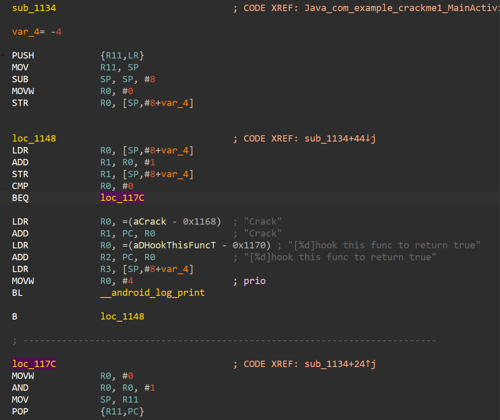
反编译的c代码中该函数直接返回0,但根据汇编代码，该函数内存在打印log信息的函数调用，提示hook this func to return true，但该分支永远不会执行，因此logcat中未查看到该log信息，按照提示，后续选择该函数进行hook，其偏移地址为0x1134，后续称为proc，函数偏移地址最低为为0，Arm模式执行
查看/proc/pid/maps文件查看libcrackme1.so内存映射信息
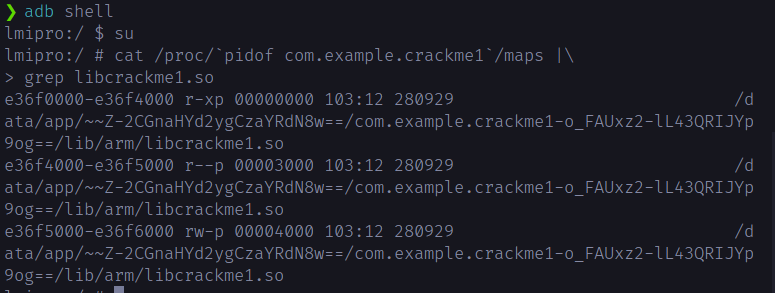
libcrackme1.so的加载基地址为0xe36f0000，因此stringFromJNI函数在内存中的地址为0xe36f1194
ida对stringFromJNI和proc下断点，附加到com.example.crackme1进程进行调试
调试器附加后发现线程13032触发了SIGABRT信号，导致程序中断，如果继续运行程序将信号传送给进程，程序会崩溃无法调试，该处需要将对产生该信号的线程挂起，并忽略该信号避免该线程恢复运行
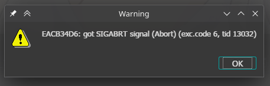
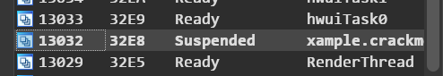
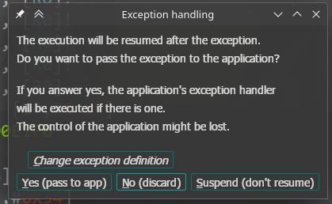
在程序输入字符串点击确认按钮，Android Studio单步执行stringFromJNI方法，ida在stringFromJNI函数入口断下，函数地址为0xe36f1194，与上述计算相同
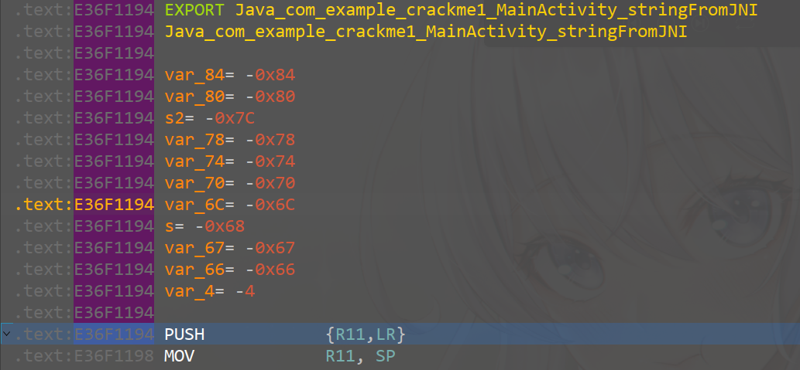
运行到生成随机字符串的函数返回，strcmp之前，查看两个字符串内容
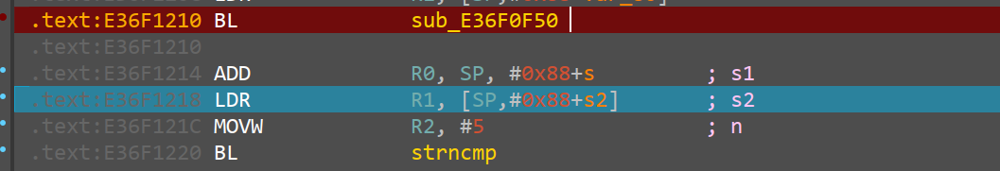
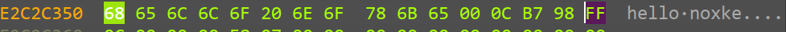
分别为生成的随机字符串和输入字符串，查看log信息
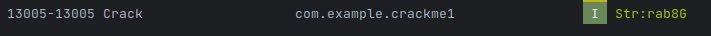
log打印的字符串为函数生成的随机字符串
断点到proc函数
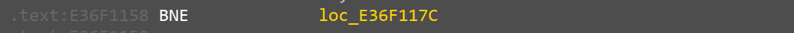
对函数的BEQ执行进行修改，使起能够打印log信息，并在函数返回时，将返回值R0寄存器修改为1
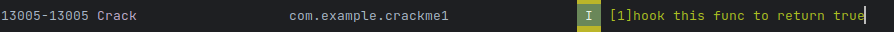
出现hook this func to return truelog信息，继续运行程序，使stringFromJNI函数返回
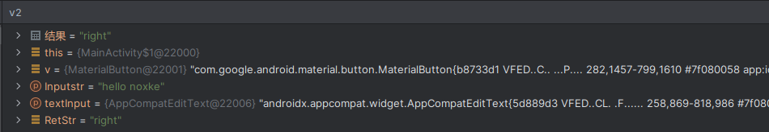
smali代码中stringFromJNI返回right，继续运行程序，屏幕显示toast消息right
3.ptrace注入程序 使用ptrace注入程序大致分为以下几个步骤
其中需要手动调用的函数malloc位于libc.so中，函数dlopen位于libdl.so中，使用readelf查看libc.so和libdl.so的导出信息
1 2 3 4 5 6 7 8 9 adb shell> grep malloc > grep dlopen
malloc函数的偏移地址为0x2d685，dlopen函数的编译地址为0x1849，注意到两个函数偏移地址最低位都是1，处理器在执行这两个函数时需要进入Thumb模式
Armv7a处理器指令集指令长度为4字节，当处理器进入Thumb模式后，指令长度为2字节，或拓展长度为4字节，当PC跳转的目的地址指令最低为为1时，处理器需要进入Thumb模式，置CPSR寄存器第5位为1，当恢复arm模式时，置CPSR寄存器第5位为0
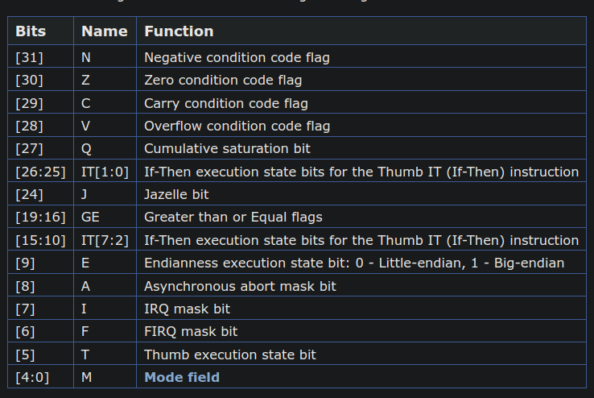
在c标准函数调用时，前4个参数依次存放在R0~R3寄存器中，剩余的参数从右向左依次压入栈中，返回地址存放在LR寄存器中，返回值存放在R0寄存器中
使用ptrace手动调用函数时，需要先使用PTRACE_GETREGS保存进程的寄存器信息，然后减小SP寄存器创建栈帧，将函数参数依次存放到R0~R3寄存器中，剩余参数存放到栈中，然后根据函数地址设置PC寄存器和CPSR寄存器，PC寄存器设置为函数地址，最低位置0，根据函数地址最低位设置CPSR寄存器Thumb模式标志为，然后设置LR寄存器为0,使函数返回时，触发错误停止
1 2 3 4 5 6 7 8 9 10 11 12 13 14 15 15 ] = ((unsigned long )proc_addr & 0xFFFFFFFE );if ((unsigned long )proc_addr & 0x1 )16 ] = regs.uregs[16 ] | 0x20 ;else 16 ] = regs.uregs[16 ] & 0xFFFFFFDF ;14 ] = 0 ;
完成寄存器设置后，使用PTRACE_SETREGS将设置进程寄存器为修改后的寄存器，使用PTRACE_CONT恢复进程运行，waitpid等待进程触发返回异常,当进程触发返回异常断下是，waitpid返回状态码为0xb7f
1 2 3 4 5 6 7 8 9 10 11 12 13 if (ptrace_setregs(pid, ®s) != 0 || ptrace_continue(pid) != 0 )printf ("call proc 0x%lx failed\n" , (unsigned long )proc_addr);return NULL ;while (status != 0xb7f )
进程返回后，使用PTRACE_GETREGS获取寄存器，读取返回值R0寄存器，并使用调用函数前保存的寄存器恢复进程寄存器
1 2 3 4 5 6 7 ptrace_getregs(pid, ®s);void *)regs.uregs[0 ];printf ("proc 0x%lx return value: 0x%lx\n" , (unsigned long )proc_addr, (unsigned long )ret);return ret;
调用malloc函数和dlopen函数之前，需要获取函数在内存中的加载地址，读取/proc/self/maps文件可以得到libc.so和libdl.so加载的基地址，使用dlopen加载so文件，使用dlsym可以获得malloc和dlopen函数在注入器进程中的加载地址，与so文件基地址相减得到偏移地址，然后读取/proc/pid/maps文件可以获取待注入进程中libc.so和libdl.so加载基地址，根据偏移地址得到malloc和dlopen在待注入进程中的地址
1 2 3 4 5 6 7 8 9 10 11 12 13 14 15 16 17 18 19 20 21 22 23 24 25 26 27 void *get_remote_proc_addr (pid_t pid, const char *lib_path, const char *proc_name) void *handle;void *local_module_base;void *local_proc_addr;unsigned long proc_offset;void *remote_module_base;void *remote_proc_addr;if (handle == NULL )printf ("open %s failed\n" , lib_path);return NULL ;0 , lib_path);printf ("%s offset: 0x%lx\n" , proc_name, proc_offset);printf ("%s address: 0x%lx\n" , proc_name, (unsigned long )remote_proc_addr);return remote_proc_addr;
注入器函数如下
1 2 3 4 5 6 7 8 9 10 11 12 13 14 15 16 17 18 19 20 21 22 23 24 25 26 27 28 29 30 31 32 33 34 35 36 37 38 39 40 41 42 43 44 45 46 47 int inject_lib (pid_t pid, const char *lib_path) int status;void *params[10 ];void *proc_malloc;void *proc_dlopen;void *proc_dlerror;void *mem_buf;"malloc" );"dlopen" );"dlerror" );0 ] = (void *)0x100 ;1 , params);if (mem_buf == NULL )printf ("malloc memory failed\n" );return -1 ;printf ("malloc memory at 0x%lx\n" , (unsigned long )mem_buf);strlen (lib_path) + 1 , (void *)lib_path);0 ] = mem_buf;1 ] = (void *)RTLD_LAZY;if (ptrace_call(pid, proc_dlopen, 2 , params) == NULL )printf ("dlopen load %s to process %d failed\n" , lib_path, pid);void *err_addr = ptrace_call(pid, proc_dlerror, 0 , params);unsigned char err[0x100 ];0x100 , (void *)err);printf ("%s\n" , err);return -1 ;printf ("dlopen load %s to process %d succeed\n" , lib_path, pid);return 0 ;
编译注入器上传到手机进行测试
1 2 3 4 5 6 7 8 9 10 11 12 13 14 15 16 17 18 19 20 21 22 23 24 25 26 27 28 29 30 31 32 33 ❯ armv7a-linux-androideabi33-clang -o injector ptrace_injector.c
根据打印信息，注入器在待注入进程中调用malloc方法成功分配了内存，但是调用dlopen返回值为NULL，加载so文件失败，调用dlerror查看到返回错误消息为dlopen failed: couldn't map "/data/local/tmp/libhook.so" segment 2: Permission denied，说明so路径写入正确，进一步尝试发现，该错误与SELinux有关，开启SELinux模式后，进程无法加载非系统lib目录下的so文件，关闭SELinux后进行注入
1 2 3 4 5 6 7 8 9 10 11 12 13 14 15 16 17 18 19 20 21 22 23 24 25 26 27 28 lmipro:/data/local/tmp # getenforce
注入成功，查看/proc/pid/maps中模块加载信息
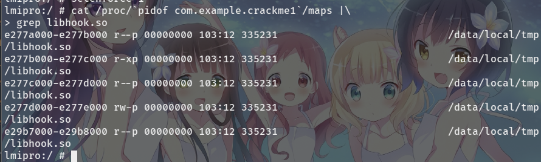
libhook.so成功加载到进程内存
4.inline hook 根据提示，选择hook的函数为proc，偏移地址0x1134，此处选择使用inline hook的方式实现
首先在libhook.c文件中定义替代proc的函数
1 2 3 4 5 int hookProc () "hook and return TRUE" );return 1 ;
函数打印log信息并返回1，使stringFromJNI函数返回right
跳转到该函数使用如下汇编指令
1 2 3 LDR R0, [PC+8]
跳转码共12个字节，将hookProc的地址先加载到R0寄存器，使用MOV指令修改PC寄存器到hookProc函数，由于hookProc函数的作用是代替proc执行，参数、返回值、返回地址均不需要额外处理
修改libcrackme1.so加载处内存的保护权限，将12个字节跳转码写入proc函数起始处，完成hook操作
so文件注入后的自动执行可以使用__attribute__((constructor))属性声明函数，该属性声明的函数会在dlopen函数返回前执行
设置hook的代码如下
1 2 3 4 5 6 7 8 9 10 11 12 13 14 15 16 17 18 19 20 21 22 23 24 25 26 27 28 29 30 31 32 33 34 35 36 37 38 39 40 41 42 43 void sethook () void *lib_base = NULL ;unsigned long proc_offset = 0x1134 ;void *proc_addr;char line[0x100 ];"/proc/self/maps" , "rt" );0x100 , fp);while (strlen (line) != 0 )if (strstr (line, "libcrackme1.so" ) != NULL )sscanf (line, "%lx" , (unsigned long *)&lib_base);break ;0x100 , fp);if (lib_base == NULL )"get libcrackme1.so base failed" );return ;"libcrackme1.so at 0x%lx" , (unsigned long )lib_base);void *)((unsigned long )lib_base + proc_offset);"hook proc at 0x%lx" , (unsigned long )proc_addr);"new proc at 0x%lx" , (unsigned long )hookProc);if (mprotect(lib_base, 0x2000 , PROT_READ | PROT_WRITE | PROT_EXEC) != 0 )"mprotect failed" );"mprotect" );"Error: %s\n" , strerror(errno));unsigned char jumpCode[0xc ] = {0x00 , 0x00 , 0x9F , 0xE5 , 0x00 , 0xF0 , 0xA0 , 0xE1 };unsigned long *)(jumpCode + 8 ) = (unsigned long )hookProc;void *)jumpCode, 0xc );
设置log和so入口函数如下
1 2 3 4 5 6 7 8 9 10 11 12 13 14 15 16 17 18 19 20 21 22 23 void onload () __attribute__ ((constructor)) ;void (*__android_log_print)(int i, ...);void *handle;#define TAG "Crack" #define LOGD(...) __android_log_print(3, TAG, __VA_ARGS__) void *(*__memcpy)(void *dst, void *src, size_t n);void onload () "/system/lib/liblog.so" , RTLD_LAZY);void (*)(int , ...))dlsym(handle, "__android_log_print" );"/apex/com.android.runtime/lib/bionic/libc.so" , RTLD_LAZY);void *(*)(void *, void *, size_t ))dlsym(handle, "memcpy" );"injected by noxke" );return ;
其中的__android_log_print和memcpy需要使用dlopen和dlsym获取
编译hook代码，上传并注入到com.example.crackme1进程中
1 2 3 4 5 6 7 8 armv7a-linux-androideabi33-clang libhook.c -shared -fPIC -o libhook.so
使用logcat查看log信息
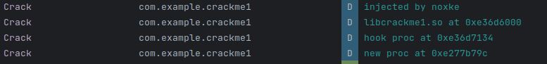
随意输入字符串，点击确定按钮
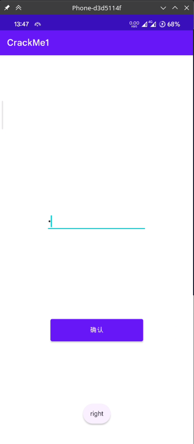
logcat打印日志
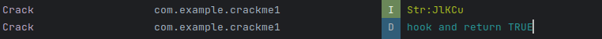
hook结果与所需结果相同，proc代码的调用会被跳转到hookProc执行并返回，stringFromJNI返回right字符串
使用ida查看修改后的proc函数和hookProc函数
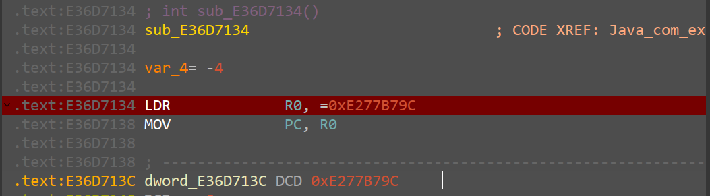
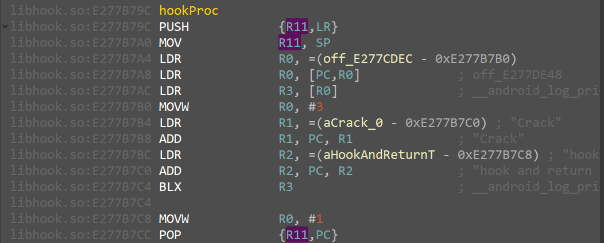